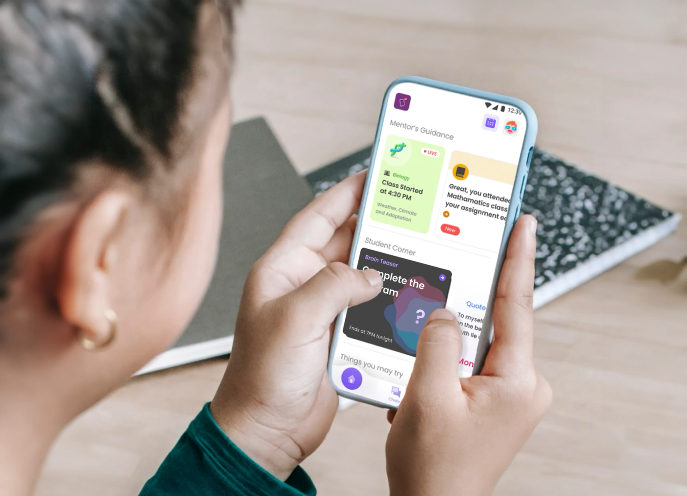
Banner still from the MentorConnect case study.
MentorConnect Case Study
Strengthening Academic Performance with a Smart Guidance Framework for India's largest EduTech.
This PDF export preserves the current visible MentorConnect case-study content in a print-friendly order. Video sections are represented with still captures, and code-rendered visuals are included as screenshots.
About
BYJU'S built MentorConnect to help students and parents stay connected with mentors, with the larger goal of improving learning consistency, confidence, and academic outcomes.
Project Overview
This project reframed MentorConnect from a passive chat utility into a proactive mentorship layer with contextual recommendations, habit-forming nudges, and stronger parent collaboration to support student success at scale.
Role
Product Designer
Team
Mentors, students, parents, product stakeholders, and engineers
Impact
- Accelerated app engagement to 3X with steady WoW engagement.
- Freed up mentors' productivity with a 30% reduction in tickets.
Introduction
Providing personalised mentorship to help students set and achieve their learning goals.
BYJU'S, one of India's top Ed-Tech startups, serves a vast student base with online classes and recorded learning materials. To ensure customer satisfaction, they employ customer success specialists, known as mentors, who are responsible for supporting students' learning goals and managing parents' expectations.
The Problem
MentorConnect had limited outcome in driving students' success.

MentorConnect Play Store screen showing one-on-one mentor support.

MentorConnect Play Store screen showing group chat.

MentorConnect Play Store screen showing attendance tracking.

MentorConnect Play Store screen showing performance insights.
MentorConnect enabled students and parents to chat with mentors to support children in their learning journey. In practice, however, 78% of tickets were related to technical support issues such as joining classes, tablet performance, and warranty claims. As a result, the product was rarely used for academic support, and most conversations were reactive and one-off.
This also reflected in the app usage metrics:
1.3
Average sessions per DAU
per day
11%
Day 7 retention
27%
Rolling 7-day DAU ratio
Business Objective
Students' success tied to business goals
Although students are the end users, parents are the ones making and renewing the purchase decision. Their perception of progress, support, and academic outcomes directly shapes retention. As a result, mentorship was not just an add-on service but a key lever to boost business, which depended on the following outcomes:
- Drive Student Success: Attendance, assignment submission, participation in the class, test scores, concept clarity.
- Drive parent delight: Manage and meet their expectations to build confidence.
- Drive Adoption and Engagement: Open MentorConnect and BYJU'S app multiple times a day.
Research & Discovery
Effective mentorship requires Consistency, Expertise, and Positive Relationships.
To understand what academic excellence means to parents and gauge their expectations, I conducted customer interviews. I segmented users around four parameters: Class attendance, Engagement, Assignment submission, and Performance. Thus recruited students from four broad cohorts.
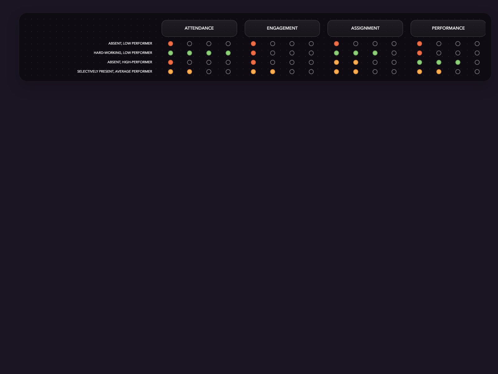
Cohort matrix showing four student profiles across attendance, engagement, assignment, and performance.
I picked a mix of students across age groups, subscription age, region, and socioeconomic backgrounds.
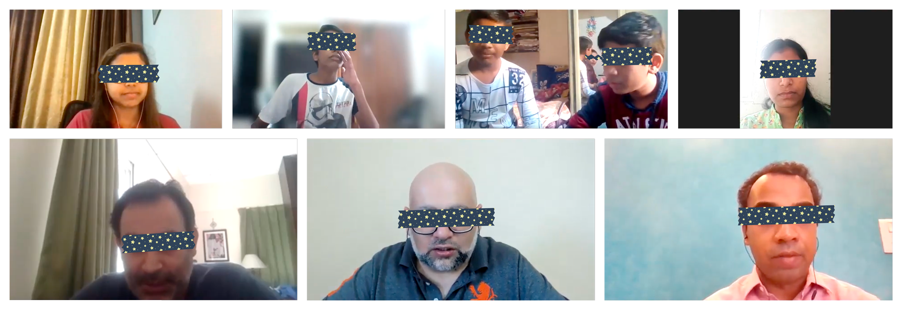
Even with BYJU'S live classes, students still relied on tuition. They were highly aspirational, curious, and self-driven, but they struggled with time management.
“I sometimes miss class because I was playing or forgot.”
“There's nothing I don't like about studies, as my future depends on it.”
“My Maths is weak, currently. I'm not able to understand word problems.”
“I get stressed before exams as some concepts are not clear. I use Google to get my answers.”
“Today schools are for giving exams only, I want Byjus to cater to Santosh's all study needs as we are not able to give his that much time.”
“I used to teach Niraj until class 6th, now I just take care on the monitoring front.”
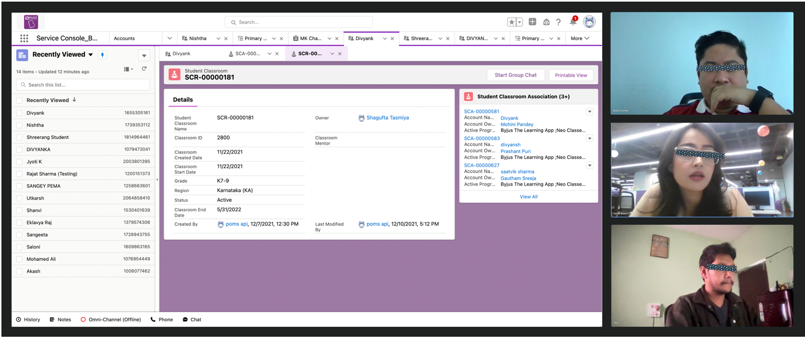
I also spoke with mentors to learn about their experiences with students, their perspectives on mentorship, their roles, and the systems they work within.
By triangulating insights from these conversations, I got a holistic view of the ecosystem. I mapped a student's learning journey, capturing their implicit and explicit needs, challenges, insights, and opportunity areas. I also partnered with the insights team to validate these findings with quantitative data.
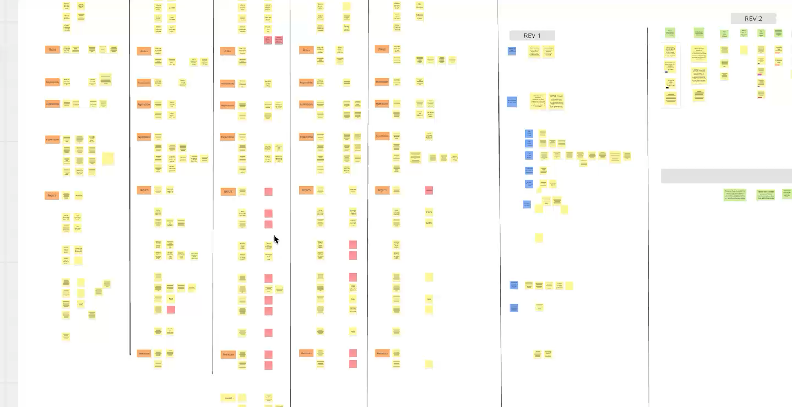
Research synthesis process.
The Findings
Effective mentorship is a blend of guidance technique, context, and personalisation.
Students' learning journeys showed gaps in three areas:
- Time Management: Students often find themselves struggling with a variety of classes, extra-curricular activities, and assignments from each of them.
- Performance Management: The exact root cause that is leading to difficulty in comprehension of a topic is often unidentified.
- Parent Engagement: Parents do not have an accurate visibility of performance, struggles, and improvements to be able to monitor.
These four themes shape student engagement:
- Performance Indicators with actionable suggestions to students and parents to elicit desired academic outcomes.
- Social influence to motivate students through healthy competition and companionship.
- Incentives and gamified experiences will ensure constant encouragement for students, for increased engagement.
- Use local languages in communication to create a sense of belongingness.
Mentors, meanwhile, operated within tight and clearly defined SOPs:
- Formulaic Outbound Interactions: Outbound communication was largely informational and sent in bulk to satisfy SOP requirements.
- No long-term engagement: Mentors had no practical way to track progress and follow-up for 600+ students they supported.
Opportunity Areas & Ideation
Used brain-writing ideation technique, and the DVF framework to filter them.
For each problem area, I ideated broadly with a team of stakeholders. For example, for attendance, how can we encourage a student who is low on motivation? And, on the other hand, how might we help students with overloaded schedules stay consistent with class attendance?
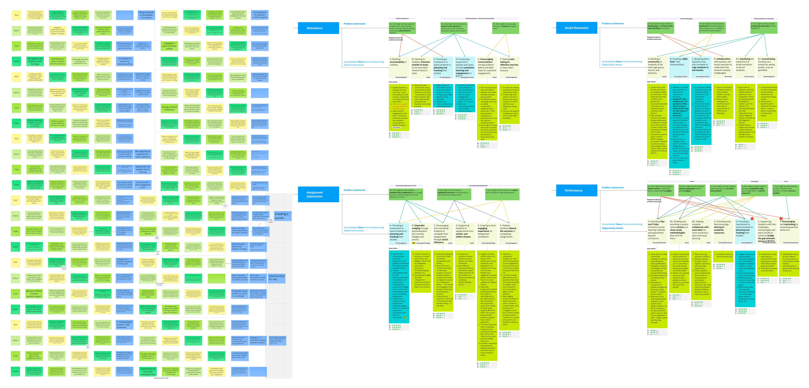
I used the DVF framework to consolidate broad ideation into product ideas.
Product idea 1: Surface nudges to motivate students throughout the application
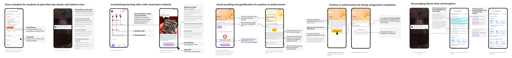
A horizontally scrubbed ideation view for nudges to motivate students.
Product idea 2: Smart planner that makes recommendations to the students
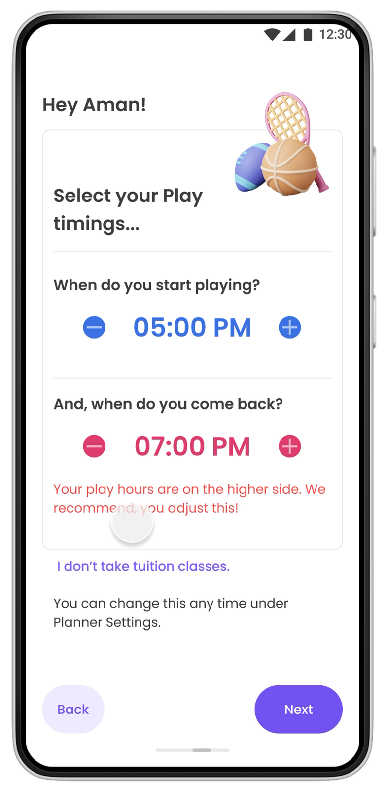
Video still: Quick onboarding steps to understand students' day and smartly plan their day.
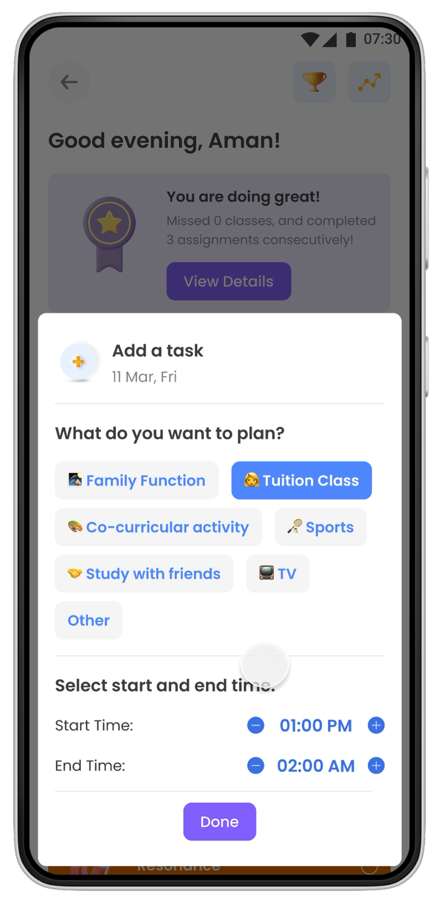
Video still: Students can plan their day by adding pre-defined day-to-day activity.
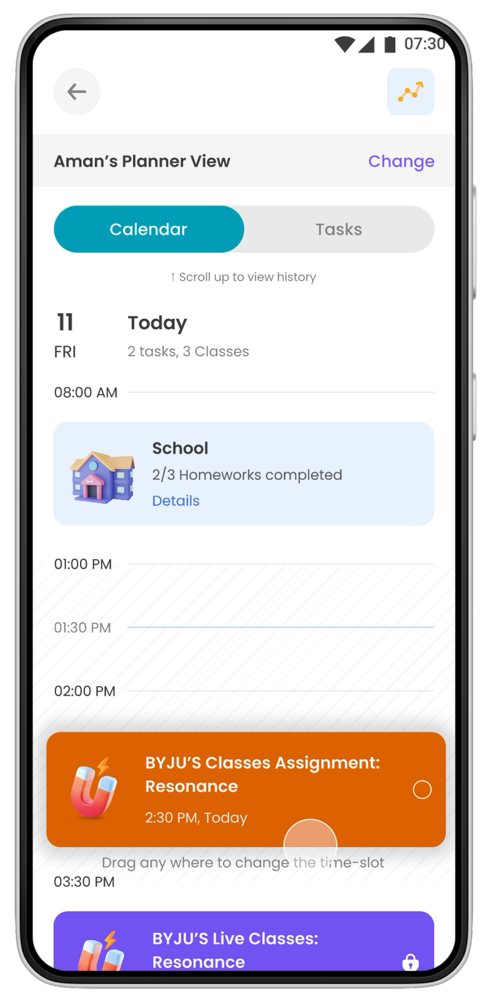
Video still: Students can organise their activities to adjust to changes in their day.
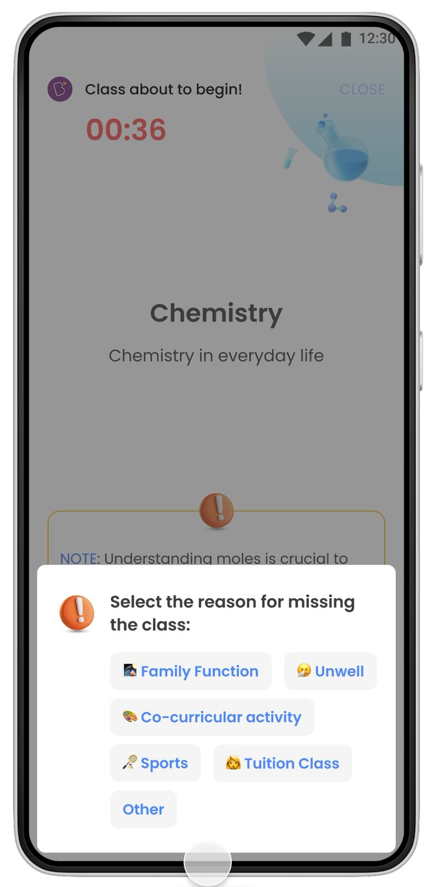
Video still: Call before class begins, students can log reason of not attending the class for mentorship.
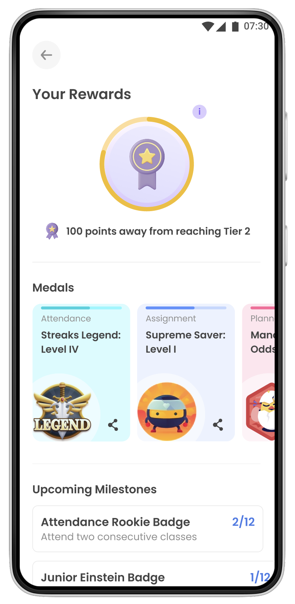
Rewards section for gamified experience that incentivises engagement.
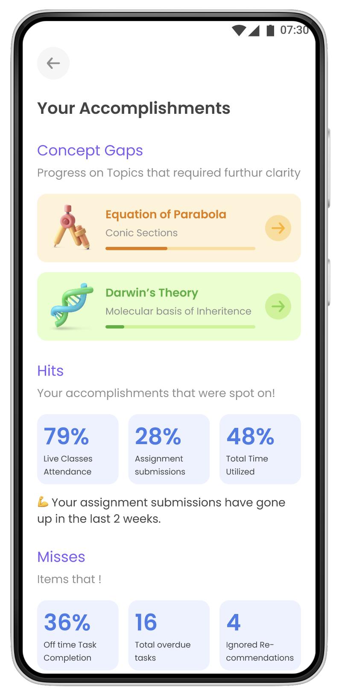
Actionable insights with positive reinforcement.
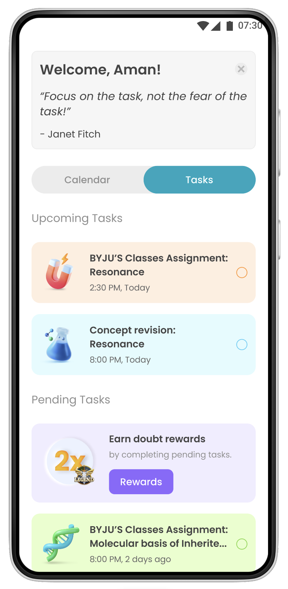
Tasks view.
Product idea 3: Home feed that summarises actionable insights and recommendations to improve performance.
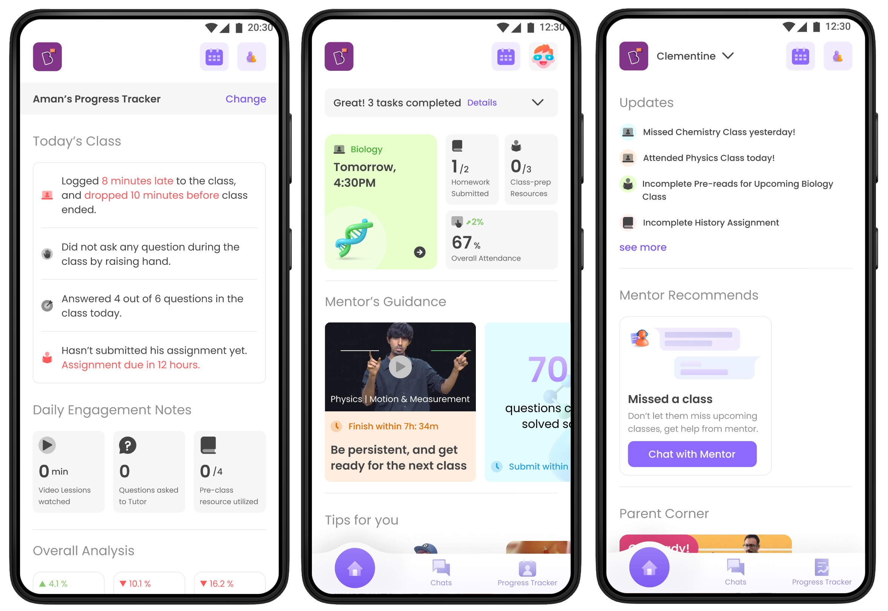
Use-case scenarios for the home feed concept.
After alignment with business and engineering stakeholders, Idea 3 seemed to have the following advantages over the others:
- Aligned with MentorConnect's role as a proactive guidance layer that could improve learning outcomes.
- Scalability because its modules could be introduced incrementally, unlike a planner or calendar that would require a much larger technical investment.
- Lower architectural impact than Idea 1, which depended on a broader ranking, points, and rewards system.
- Lower adoption risk because it did not rely on sustained proactive usage, unlike the planner concept.
Solution
A home feed with personalised guidance, encouraging nudges, and engaging activities.
I refined the third idea to have three sections:
- Mentor's Guidance: "Real" (Personalised) mentorship in the form of contextual recommendations based on student persona and performance signals.
- Student Corner: Rather than relying on bulk messages in a space meant for personal support, mentors could surface relevant knowledge and activities at scale.
- Things you may try: Space for BYJU'S to do upselling and cross-selling.
How does "Mentor's Guidance" work?
Here is the high-level flow of Mentor's Guidance:
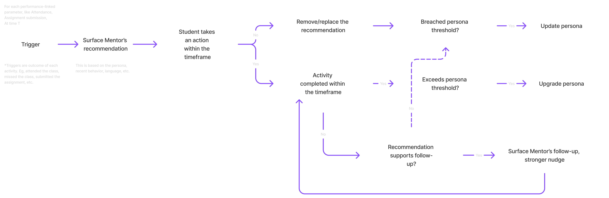
High-level flow of Mentor's Guidance.
Below is a sample breakdown of the nudge framework for attendance. The same logic was applied to the other performance parameters.
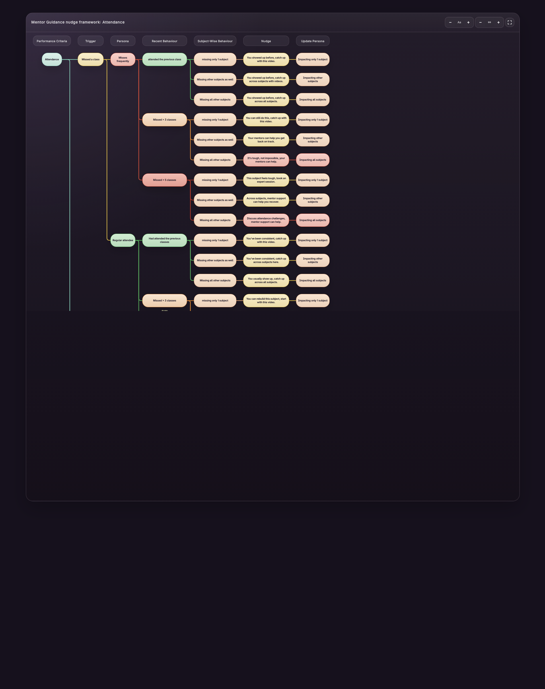
Attendance tab of the Mentor Guidance nudge framework chart.
Nudges are delivered on cards which are configured to subjects and performance parameters. Here's an example:
Home feed card row 1.
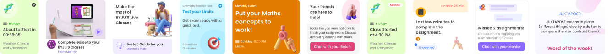
Home feed card row 2.
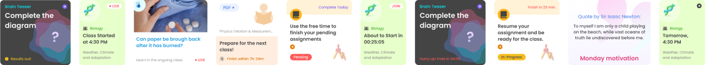
Home feed card row 3.
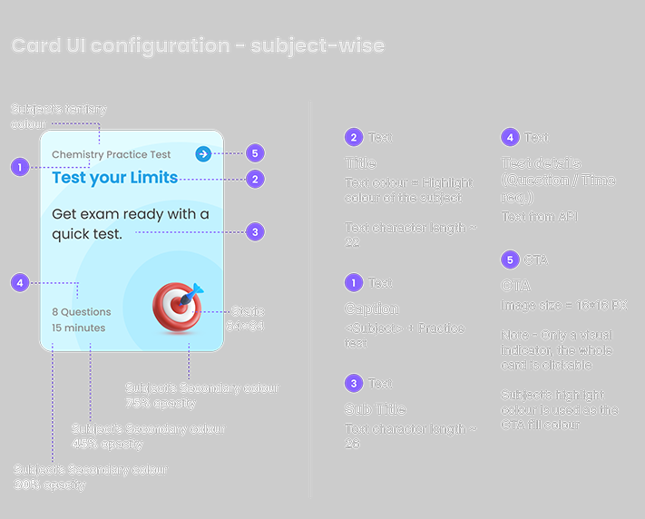
Guide showing mentorship delivery flow.
How does "Student Corner" work?
A CMS enabled mentors to publish communication and activity cards at scale within MentorConnect.
- Audience segmentation: Mentors could filter out students with criteria like customer age, class, board type, batch type, etc. They could also upload a CSV of students' enrolment IDs.
- Campaign engagement monitoring: Each campaign could be monitored for reach and effectiveness through impressions and CTR.
- Customisation: Card design was controlled through a template and the mentors had the ability to customise it to suit their needs within the constraints of the template.
- Shared asset management for consistency: The CMS enabled mentors to have a shared repository of media assets to ensure quality and consistency.
Student Corner CMS walkthrough.
Here's how the home feed looks:
Interactive prototype reference: The live case study embeds a Figma prototype at this point in the flow. That embed did not render reliably in headless export mode, so this PDF preserves the reference as a direct link instead of silently dropping it.
To bring inactive users back, mentors manually prompted users to update the app, supported by notification nudges.
Outcome
I enabled proactive mentorship at scale without increasing mentors' workload.
We saw a steady increase in Day 7 retention from 11% to 25% in 3 weeks of roll-out.
- Average sessions per DAU rose to 5.4 times per user.
- Attendance and Assignment submission nudges achieved a 23% CTR and were correlated with a 4% increase in attendance within the cohort.
- Mentors reported a higher share of non-technical tickets.
As a consolidation exercise done across BYJU'S products, MentorConnect was subsumed under the parent "BYJU'S the Premium app" or BTLP.